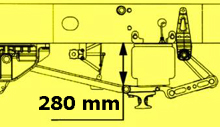
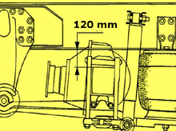

Calibration of the level sensor should be performed when:
Any of the level sensors have been changed.
Work has been performed on the level sensor.
The control unit has been changed.
Note:
During calibration the vehicle will be raised quickly to check that the level sensors have got the correct polarities.
Ensure that no one is under the vehicle.
Test prerequisites:
Parking brake released.
Primary tank pressure higher than 800 kPa.
Wheels blocked.
The vehicle unloaded.
Ensure that no one is under the vehicle.
Check that control rods are secured between the level sensors and axles.
Procedure:
Make sure that the vehicle is not loaded.
Only applicable to 6x2: Lower the trailing wheel axle and set the bogie in centre position.
Adjust any fault codes.
Block the weels and release the parking brake.
Start the engine and fill the system up with compressed air until the compressor releases pressure.
Raise the vehicle with the control box.
Position spacers according to the picturers below.
Front axle

Drive axle

Note: Always place the spacers on both the front axle and the drive axle, irrespective of which level sensor that has been replaced.
Distance rear = 120 mm
Distance front = 280 mm
Lower the vehicle onto the spacers with the control box, without draining the air bellows.
Perform calibration.
End diagnostic session and remove the spacers.
Note: During calibration the vehicle will be raised quickly to check that the level sensors have got the correct polarities.